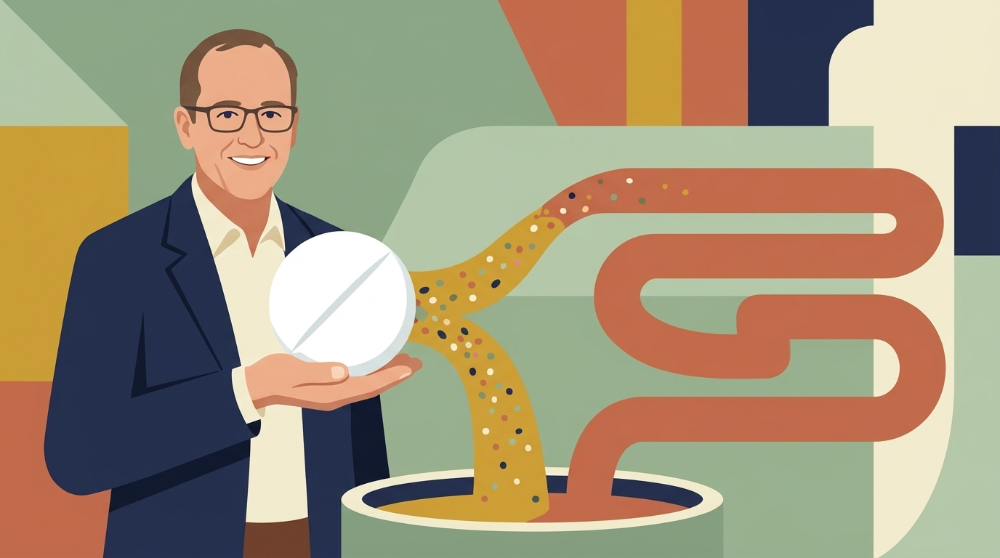
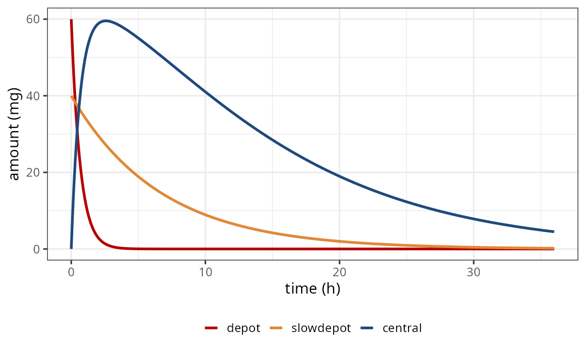
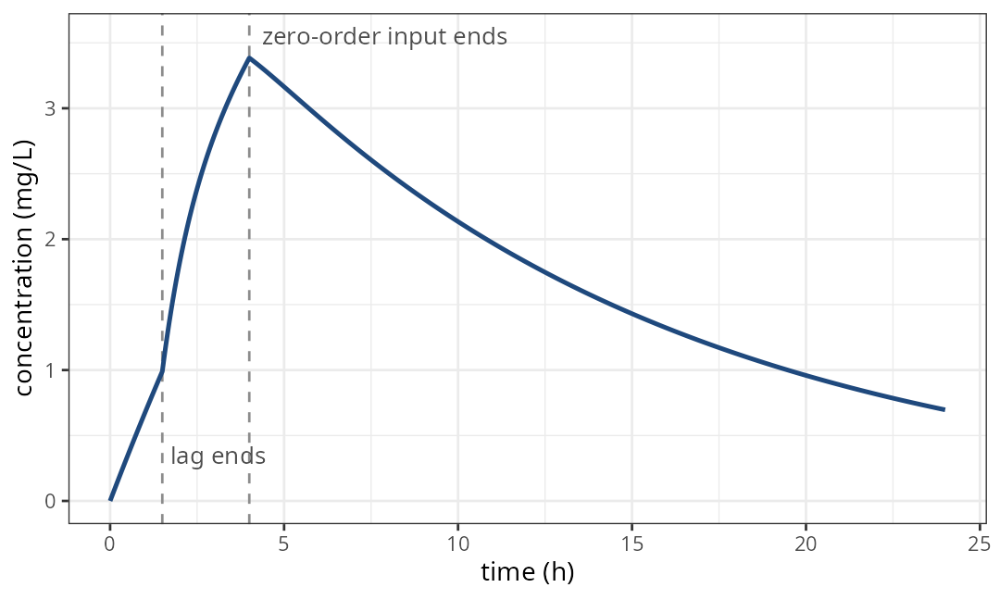
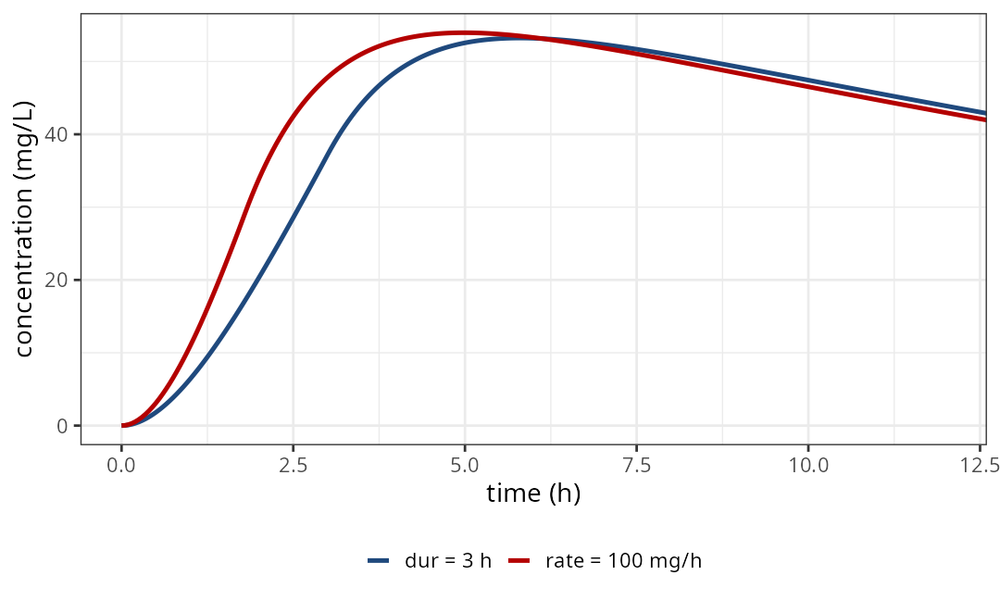
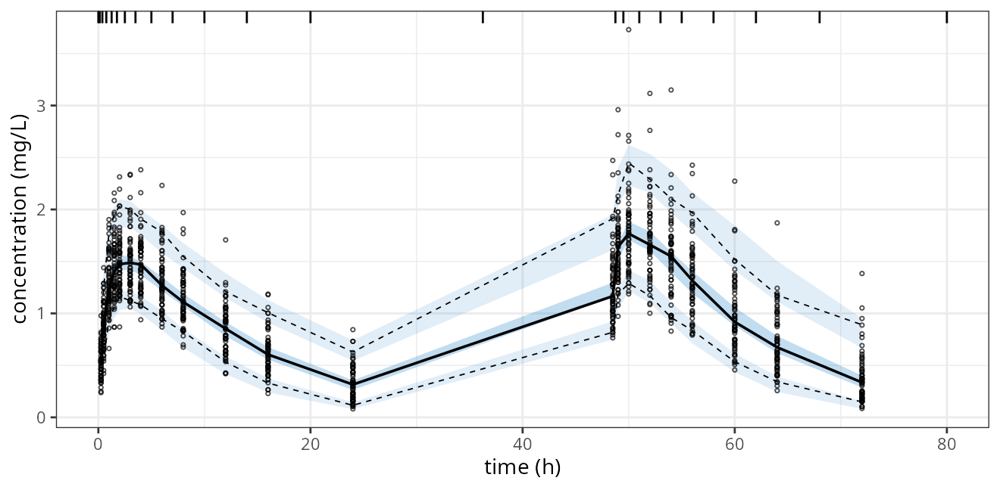
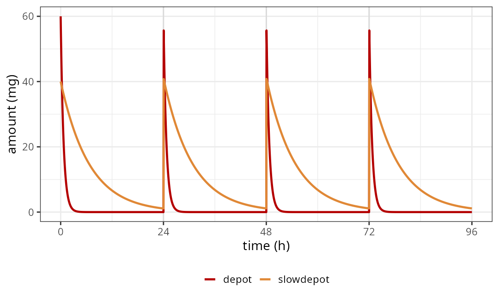

Splitting one dose between absorption routes in the model
On behalf of the nlmixr2 team

| directive | a bolus record becomes | an infusion record becomes |
|---|---|---|
splitBolus(src, ...) |
a bolus in each target | not split |
splitInfusion(src, ...) |
not split | an infusion in each target |
splitInfusionBolus(src, ...) |
an infusion in the first target, a bolus in the rest | an infusion in each target |
splitBolusInfusion(src, ...) |
a bolus in each target except the last, which gets an infusion | an infusion in each target |
One function per model. A dose type the function doesn’t split goes to the source unchanged.

ev <- et(amt = 100,
cmt = "depot") |>
et(seq(0, 36, by = 0.1))
rxSolve(dual |> zeroRe(), ev)Same cp as two dose records with F1/F2:
all.equal(...)
#> [1] TRUEsplitInfusionBolus(depot,
central, depot)
dur(central) <- tk0 # 4 h
f(central) <- fr # 0.7
f(depot) <- 1 - fr
alag(depot) <- lag2 # 1.5 h
d/dt(depot) <- -ka2 * depot
d/dt(central) <- ka2 * depot -
cl / v * central

splitInfusion(sc, fast, slow)
f(fast) <- 0.6
f(slow) <- 0.4300 mg written two ways:
rate = 100: copies run 1.8 h and 1.2 h at 100 mg/hdur = 3: copies run 3 h at 60 and 40 mg/h| ID | TIME | EVID | AMT | II | ADDL | CMT | DV |
|---|---|---|---|---|---|---|---|
| 1 | 0.00 | 1 | 100 | 24 | 2 | depot | . |
| 1 | 0.25 | 0 | 0 | 0 | 0 | cp | 0.563 |
| 1 | 0.50 | 0 | 0 | 0 | 0 | cp | 0.795 |
| 1 | 1.00 | 0 | 0 | 0 | 0 | cp | 1.15 |
60 simulated subjects, 100 mg daily for 3 days, rich sampling after the first and the last dose. Build dose rows directly: addDosing = TRUE returns the translated rows, one for depot and one for slowdepot.
| parameter | truth | FOCEi | SAEM |
|---|---|---|---|
| fast absorption ka1 (1/h) | 1.5 | 1.51 | 1.49 |
| slow absorption ka2 (1/h) | 0.15 | 0.155 | 0.147 |
| fraction by the fast route | 0.6 | 0.610 | 0.618 |
| clearance CL (L/h) | 4 | 4.14 | 4.13 |
| volume V (L) | 40 | 39.3 | 39.0 |
Same model function and same data for both: nlmixr(dual, dat, "focei") and nlmixr(dual, dat, "saem").

Simulated from the fit with the original one-row-per-dose data; bins set halfway between the nominal sample times.

splitBolus(depot, depot, slowdepot)
...
if (t > 0 && t %% 24 == 0 &&
cp < 0.5) {
bolus(100)
}The other three directives split only doses in the data.
model({}) sends it to each targetf() gives each target its share; alag(), dur() and rate() give each route its own timing?splitBolus and ?splitInfusionWorks with the current CRAN releases, rxode2 5.1.8 and nlmixr2est 7.2.1. The silent-bolus cases are tracked in github
Section illustrations are Gemini-generated artwork, drawn from a photo of Matthew Fidler
nlmixr2 development team